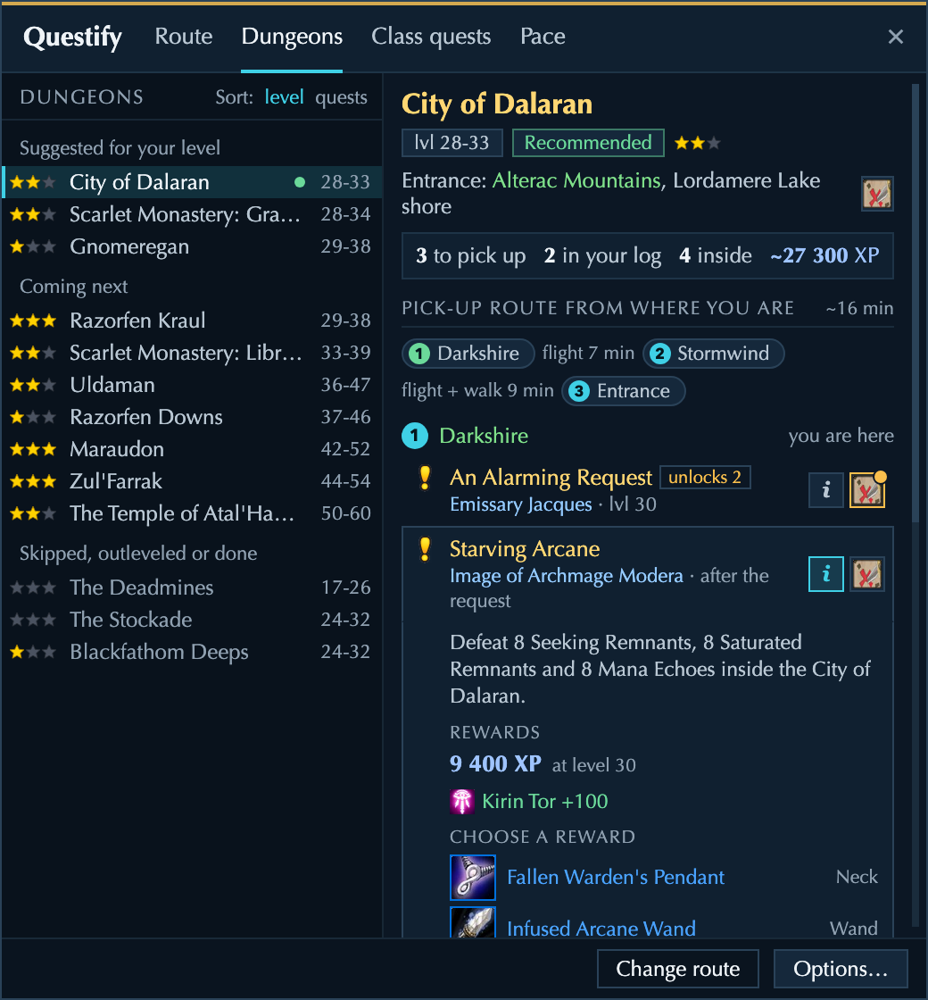

Every dungeon of your faction, suggested for your level, coming next, or done. One to three stars tell how many quests are left there.
For the selected dungeon: the pick-up route from where you are, each quest with its giver, objective, XP and rewards, the quests to do first, and one click to mark a giver on the map or add it all to your route.
Human, level 30, in Darkshire: City of Dalaran.
